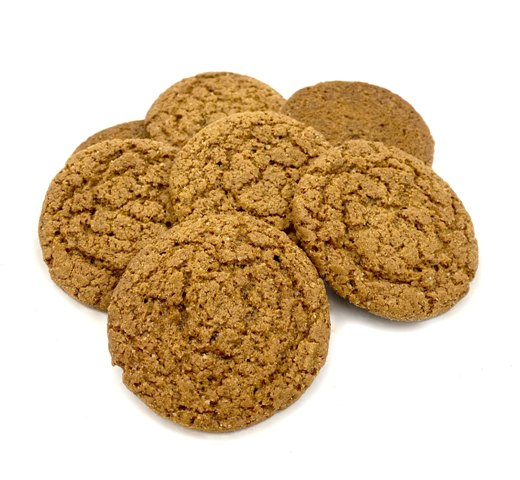

Pepper Nodder
Home

Description
These Scandinavian ginger cookies are a holiday staple
and will make a welcome addition to your cookbook!
This recipe makes many small cookies and uses mostly simple
ingredients you most likely already have in the kitchen.
Ingredients
- 1 Cup Butter
- 1 Cup Sugar
- 2 Eggs
- 1 tsp Ground Cardamom
- 1 tsp Cinnamon
- 1 tsp Ground Ginger
- Ground Black Pepper to taste
Steps
- Preheat the oven to 350
- Mix butter and sugar till smooth, then beat in eggs one at a time.
- Add flour and spices to mixture.
- Form mixture into small ~1 inch cookies
- Bake for 10 mins.
- Transfer to wire racks and let sit till cool.